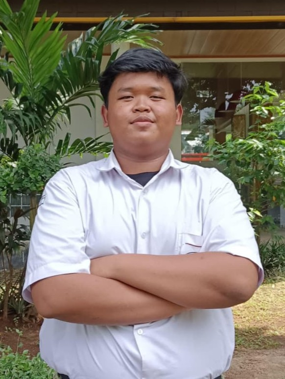

Agung Satriawan
Alamat: Jl Menpor Palsigunung, Tugu, Cimanggis, Depok, Jawa Barat 16451
Email: 0110226068@student.nurulfikri.ac.id
Telephone: 083832546699
Pekerjaan: Mahasiswa
Tentang Saya
Saya adalah mahasiswa aktif program studi Teknik Informatika di STT Terpadu Nurul Fikri yang memiliki ketertarikan tinggi pada pengembangan perangkat lunak, khususnya Web Development dan desain UI/UX. Selama masa perkuliahan, saya terus mengasah kemampuan teknis dalam membangun antarmuka web yang responsif, terstruktur, serta berfokus pada kenyamanan pengguna (user experience). Selain fokus pada bidang akademis, saya bertekad untuk terus mengembangkan potensi diri melalui berbagai proyek praktikum dan kolaborasi tim. Saya percaya bahwa kombinasi antara logika pemrogramaan yang solid dan prinsip desain yang baik adalah kunci untuk menciptakan solusi digital yang bermanfaat dan inovatif bagi masyarakat.